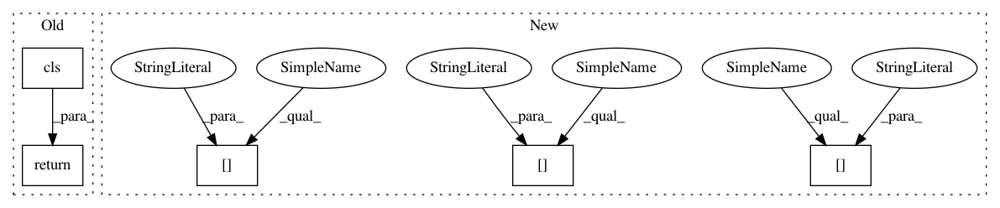

13fc68c1fbc73ba9791863d5976e529133a7786e,src/sagemaker/processing.py,ProcessingJob,from_processing_name,#Any#Any#Any#,635
Before Change
job_desc = sagemaker_session.describe_processing_job(job_name=processing_job_name)
return cls(
sagemaker_session=sagemaker_session,
job_name=processing_job_name,
inputs=[
ProcessingInput(
source=processing_input["S3Input"]["S3Uri"],
destination=processing_input["S3Input"]["LocalPath"],
input_name=processing_input["InputName"],
s3_data_type=processing_input["S3Input"].get("S3DataType"),
s3_input_mode=processing_input["S3Input"].get("S3InputMode"),
s3_data_distribution_type=processing_input["S3Input"].get(
"S3DataDistributionType"
),
s3_compression_type=processing_input["S3Input"].get("S3CompressionType"),
)
for processing_input in job_desc["ProcessingInputs"]
],
outputs=[
ProcessingOutput(
source=job_desc["ProcessingOutputConfig"]["Outputs"][0]["S3Output"][
"LocalPath"
],
destination=job_desc["ProcessingOutputConfig"]["Outputs"][0]["S3Output"][
"S3Uri"
],
output_name=job_desc["ProcessingOutputConfig"]["Outputs"][0]["OutputName"],
)
],
output_kms_key=job_desc["ProcessingOutputConfig"].get("KmsKeyId"),
)
@classmethod
def from_processing_arn(cls, sagemaker_session, processing_job_arn):
Initializes a ``ProcessingJob`` from a Processing ARN.
After Change
):
outputs = [
ProcessingOutput(
source=processing_output["S3Output"]["LocalPath"],
destination=processing_output["S3Output"]["S3Uri"],
output_name=processing_output["OutputName"],
)
for processing_output in job_desc["ProcessingOutputConfig"]["Outputs"]
]
In pattern: SUPERPATTERN
Frequency: 3
Non-data size: 5
Instances
Project Name: aws/sagemaker-python-sdk
Commit Name: 13fc68c1fbc73ba9791863d5976e529133a7786e
Time: 2020-03-10
Author: knakad@amazon.com
File Name: src/sagemaker/processing.py
Class Name: ProcessingJob
Method Name: from_processing_name
Project Name: snipsco/snips-nlu
Commit Name: c18abcc72779987a43de35add51864a5143ba998
Time: 2018-01-18
Author: adrien.ball@snips.net
File Name: snips_nlu/intent_parser/probabilistic_intent_parser.py
Class Name: ProbabilisticIntentParser
Method Name: from_dict
Project Name: aws/sagemaker-python-sdk
Commit Name: 13fc68c1fbc73ba9791863d5976e529133a7786e
Time: 2020-03-10
Author: knakad@amazon.com
File Name: src/sagemaker/processing.py
Class Name: ProcessingJob
Method Name: from_processing_name
Project Name: CyberReboot/poseidon
Commit Name: 20964b5c15a5400114c9aafce04913dbad4f60d6
Time: 2017-10-03
Author: joris.elzen@gmail.com
File Name: poseidon/poseidonMonitor/endPoint.py
Class Name: EndPoint
Method Name: from_json